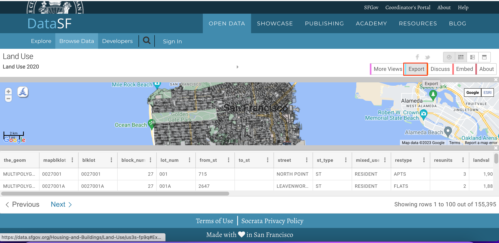
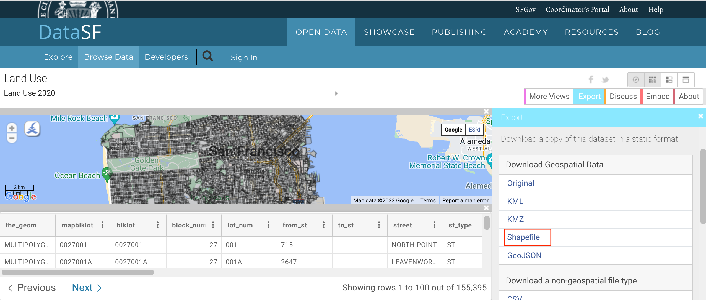

Ujaval Gandhi
Ujaval GandhiOdređivanje zaštitnih zona korišćenja zemljišta (QGIS3)¶
U ovom tutorijalu ćete raditi sa podacima o korišćenju zemljišta za grad i odrediti zaštitne zone oko određene parcele. Takva analiza je potrebna za uspostavljanje koridora ograničenja oko buke ili gustog saobraćaja.
Pregled zadatka¶
Počećemo sa shapefile-om zemljišnih parcela za grad San Francisko i koristiti tehnike geoobrade i prostorne analize kako bismo odredili zaštitnu zonu ograničenog područja oko svih nekretnina sa institucionalnom upotrebom zemljišta.
Druge veštine koje ćete naučiti¶
Kreiranje pravougaonih bafera u QGIS-u
Korišćenje prostornog indeksa za ubrzavanje analize
Dobijte podatke¶
Podaci dolaze iz grada San Franciska u obliku poligona parcela sa atributima koji ukazuju na kategorije korišćenja zemljišta. Podatke za tutorijal možete pronaći na portalu otvorenih podataka DataSF.
Pogledajmo korake za preuzimanje poligonskog shapefile-a sa kategorijama korišćenja zemljišta za svaku parcelu u San Francisku.
Idite na portal podataka - https://datasf.org/opendata/. Potražite ključnu reč „Korišćenje zemljišta“ u traci za pretragu.

Kliknite na prvi rezultat pretrage da biste vizualizovali i izvezli podatke.

Videćete podatke i atribute. Kliknite na Izvoz da biste preuzeli podatke
Korišćenje zemljišta 2020.U opcijama izvoza, kliknite na Shapefile da biste preuzeli shapefile poligona sa podacima.
Biće preuzeta zip datoteka sa podacima o korišćenju zemljišta. Pređite na karticu O nama da biste pročitali informacije o kategorijama i jedinicama korišćenja zemljišta koje će biti korisne u daljem tekstu ovog tutorijala.
Radi lakšeg snalaženja, možete direktno preuzeti kopiju shapefile-a ispod:
Procedura¶
Otvorite QGIS. Kliknite na ikonu da biste dodali sloj.

Pređite na karticu :gui label:Vector i idite do shapefile-a korišćenja zemljišta. Kliknite na :gui label:Add.

Obratite pažnju na naziv CRS u donjem desnom uglu QGIS-a. On označava da su podaci u geografskom koordinatnom sistemu
OGC:CRS84. Kliknite na njega.
Dijalog Sistem koordinatnih referenci projekta (CRS) će pokazati da je izabrani CRS „WGS 84 (CRS 84)“. Jedinica mere za ovaj CRS je „stepen“. Sva geoobrada na ovom sloju će se vršiti u izvornim jedinicama CRS-a. Jedinica stepen nije odgovarajuća za ovu analizu.

Ponovo ćemo projektovati sloj na projektovani CRS pogodan za region -
NAD83 / Kalifornija zona 3 (ftUS). Ovo jeEPSG:2227koji koristi NAD83 datum sa mernim jedinicama u stopama. Idite na .
U dijalogu „Reprojekcija sloja“, izaberite učitani sloj kao Ulazni sloj. Kliknite na ikonu pored selektora da biste izabrali Ciljni CRS.

Potražite „EPSG:2227“ u traci i izaberite CRS „NAD83 / Kalifornija zona 3 (ftUS)“. Kliknite na :guilabel:„Nazad“ da biste nastavili.
Sačuvajte rezultat Reprojected. Proširite opcije pregledanja i izaberite Sačuvaj u datoteku.

Sačuvajte izlazni shapefile u izabranoj fascikli kao
LandUse2020.shp. Označite opciju Otvori izlazni fajl nakon pokretanja algoritma da biste dodali reprojektovani sloj u QGIS.
Uklonite originalni sloj sa CRS WGS 84 iz QGIS-a. Izaberite sloj i kliknite na simbol Ukloni sloj.
Nastavićemo proces sa reprojektovanim slojem. Kao što smo videli u odeljku About preuzetog shapefile-a na portalu podataka, klasifikacija je sledeća.
CIE = Kulturni, Institucionalni, Obrazovni
MED = Medicinski
MIPS = Kancelarija (menadžment, informacije, stručne usluge)
MEŠANO = Mešovita namena (bez stambenih objekata)
MIXRES = Mešovita namena (sa stambenim objektima)
PDR = Industrija (proizvodnja, distribucija, popravka)
MALOPRODAJA/PRENOS = Maloprodaja, Zabava
STANOVNIK = Stambeni
POSETILAC = Hoteli, Usluge za posetioce
SLOBODNO = Slobodno
RED = Pravo prolaza
OTVORENI PROSTOR = Otvoreni prostor
Za ovaj tutorijal, zanima nas samo institucionalna upotreba zemljišta. Tako da možemo da upitamo za vrednost CIE u tabeli atributa. Idite na .

Potražite alatku Izaberi po atributu iz alata za obradu. Dvaput kliknite da biste je otvorili.

U dijalogu „Izaberi po atributu“, podesite
LandUse2020kao Ulazni sloj. Izaberitelanduse` kao :guilabel:`Atribut selekcije` i unesite ``CIEkao Vrednost. Kliknite na Pokreni.

Videćete da su parcele koje odgovaraju našem upitu označene žutom bojom. Sve su to parcele koje pripadaju institucionalnoj nameni zemljišta u gradu.

Sada možemo da kreiramo bafer oko izabranih parcela. Nazad u glavnom QGIS prozoru, otvorite Processing Toolbox. Potražite i pronađite alatku Buffer. Dvaput kliknite da biste je otvorili.

U dijalogu „Bafer“, izaberite LandUse2020 kao Ulazni sloj. Označite polje Samo odabrane karakteristike tako da će se bafer primeniti samo na odabrane parcele institucionalne namene zemljišta. Napravićemo bafer zonu od 100 stopa oko svake parcele. Unesite 100 stopa kao Udaljenost. Podrazumevani baferi su kružnog oblika. Pošto bavimo podacima o parcelama, pravougaona oblast bafera je prikladnija gde će svaka ivica parcele biti pomerena za rastojanje bafera. Izaberite „Kvadrat“ kao Stil završne kape i „Ugao“ kao Stil spajanja. Kliknite na dugme za pregledanje pored „Baferovano“ i izaberite Sačuvaj u datoteku.

Unesite naziv izlazne datoteke kao
buffer.shpi kliknite na OK. Kliknite na Pokreni.

Kada se obrada završi, novi sloj-bafer će biti dodat u QGIS. Ovi poligoni predstavljaju bafer zonu ograničenja oko institucionalne upotrebe zemljišta.

Sada znamo koja područja grada spadaju u ograničenu zonu. Bilo bi korisno identifikovati sve parcele koje spadaju u ovu zonu i dodati atribut koji ukazuje da se ograničenje primenjuje na tu parcelu. Prvo dodajmo kolonu u poligone bafera. Potražite u alatkama za obradu. Dvaput kliknite da biste otvorili.

U dijalogu „Kalkulator polja“, uverite se da je izabrano „bafer“ kao Ulazni sloj. Ne moramo da sačuvamo ovaj sloj, pa ostavite polje „Izlazna datoteka“ prazno. Unesite
OGRANIČENOkao rezultat Naziv polja. Postavite Tip polja rezultata naNiz. UnesiteDakao Izraz. Kliknite na Pokreni.

Novi sloj pod nazivom Izračunato biće dodat u QGIS. Otvorite tabelu atributa i proverite da li u ovom sloju postoji nova kolona pod nazivom OGRANIČENO sa vrednošću Da.

22. Next step is to do a Spatial Join to add this attribute to the original parcels layer based on which parcels intersect with the buffer zone. The LandUse2020 layer has more than 100,000 elements. We will add spatial indexing to the features to improve the performance and speedup the spatial join operation.
Check out the course Spatial Indexing section to understand more about this.
Now, search and locate the tool from the Processing Toolbox and double-click to open.

Izaberite
LandUse2020kao Ulazni sloj i kliknite na Pokreni.
Prostorni indeks je kreiran za sloj. To možete proveriti proverom svojstva sloja. Kliknite desnim tasterom miša na sloj i izaberite Properties.

Pređite na karticu Izvor i pogledajte pod odeljkom Geometrija. To ukazuje da prostorni indeks postoji.
Sada možemo da izvršimo prostorno spajanje. Potražite alatku u alatkama za obradu. Dvaput kliknite da biste je otvorili.

Želimo da Spojimo sa objektima u sloju
LandUse2020Poređenjem sa slojemIzračunato. Želimo da spojimo atribute objekata koji se seku. Označite polje zapresecanje. Kliknite na dugme za pregledanje pored Polja za dodavanje.
Izaberite samo polje „OGRANIČENO“ i kliknite na U redu.

Za tip spajanja izaberite „Uzmi samo atribut prve podudarajuće karakteristike“. Zatim kliknite na … pored Spojeni sloj i izaberite Sačuvaj u datoteku.


Kada se obrada završi, dobićete novi sloj „LandUseWithRestrictions“. Otvorite tabelu atributa i ispitajte kolonu „RESTRICTED“. Parcele koje se nalaze unutar 100ft ili 30 metara od institucionalne parcele sada imaju vrednost „Yes“ što ukazuje da se ograničenje primenjuje na tu parcelu. Ostale parcele imaju vrednost „NULL“ što ukazuje da nema ograničenja.

If you want to give feedback or share your experience with this tutorial, please comment below. (requires GitHub account)